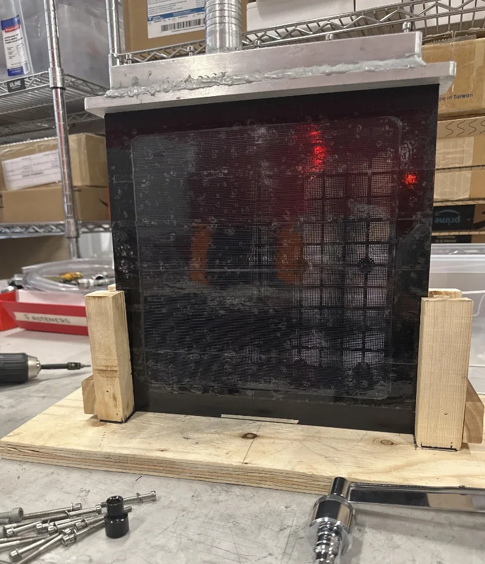
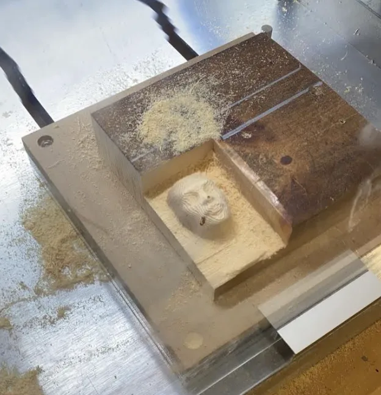
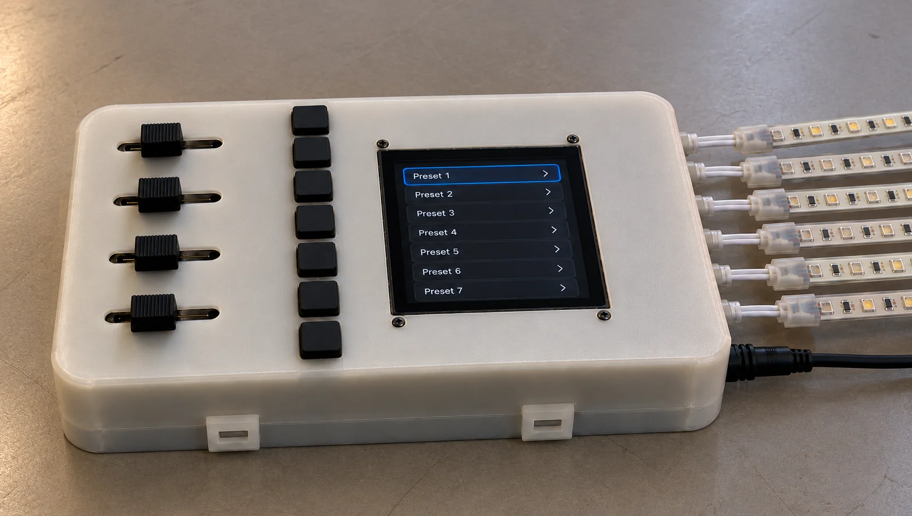
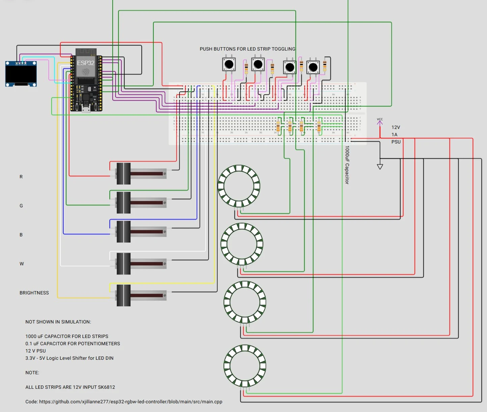
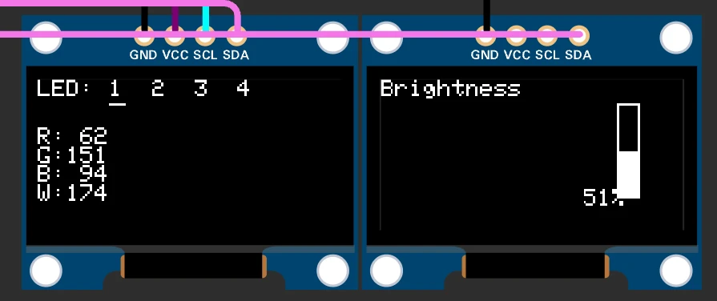
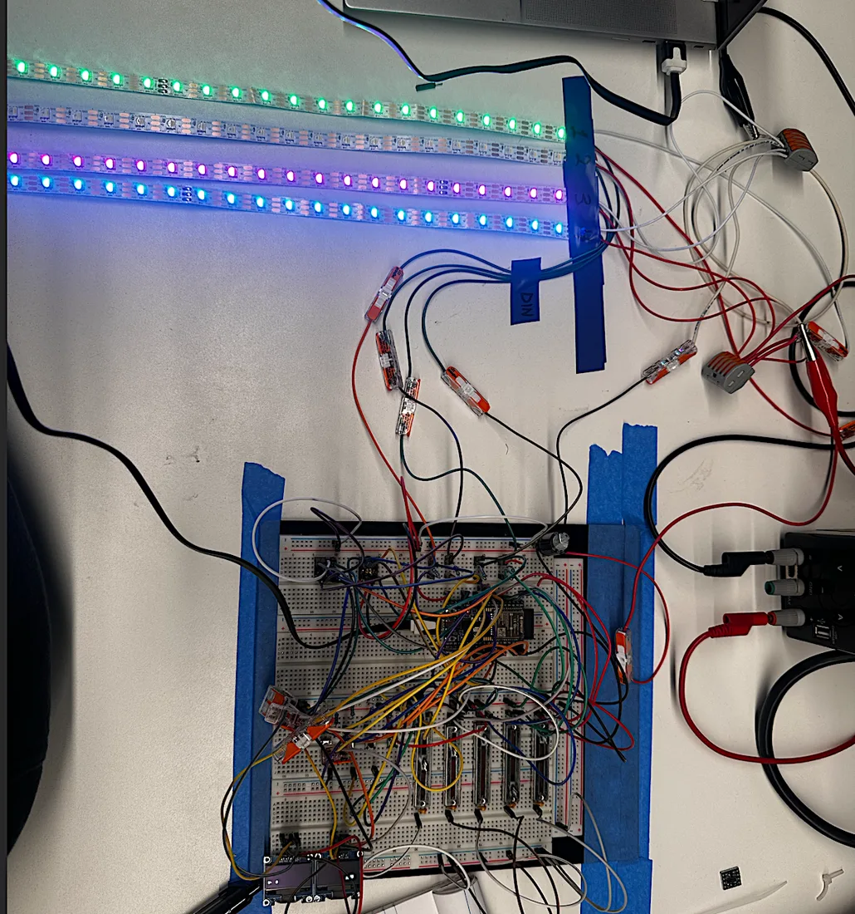
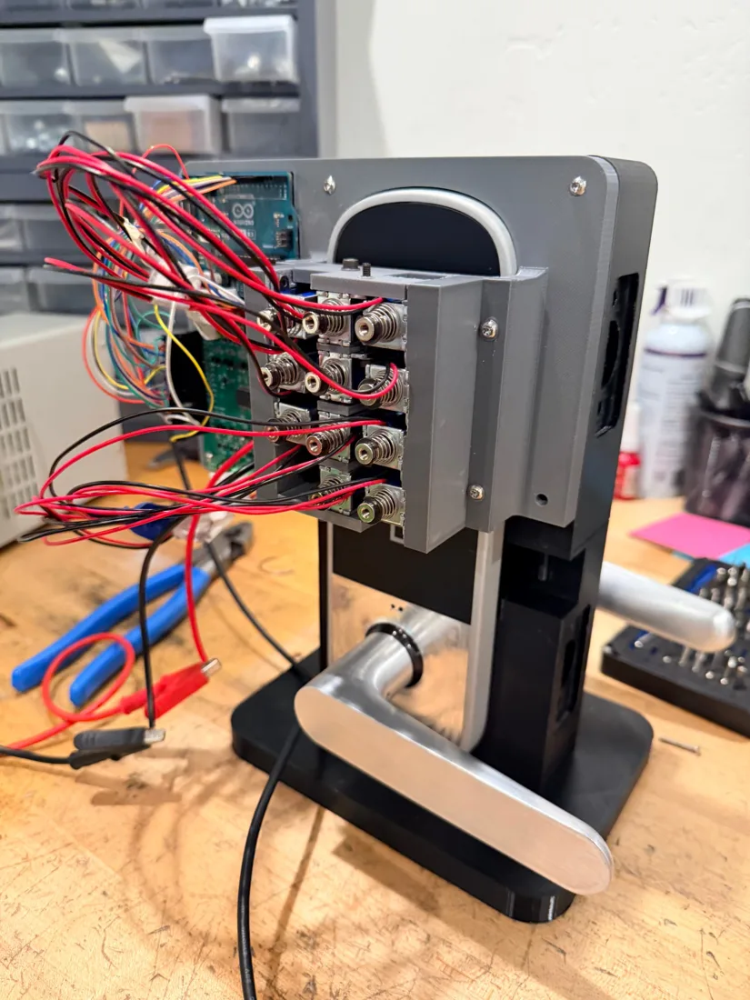
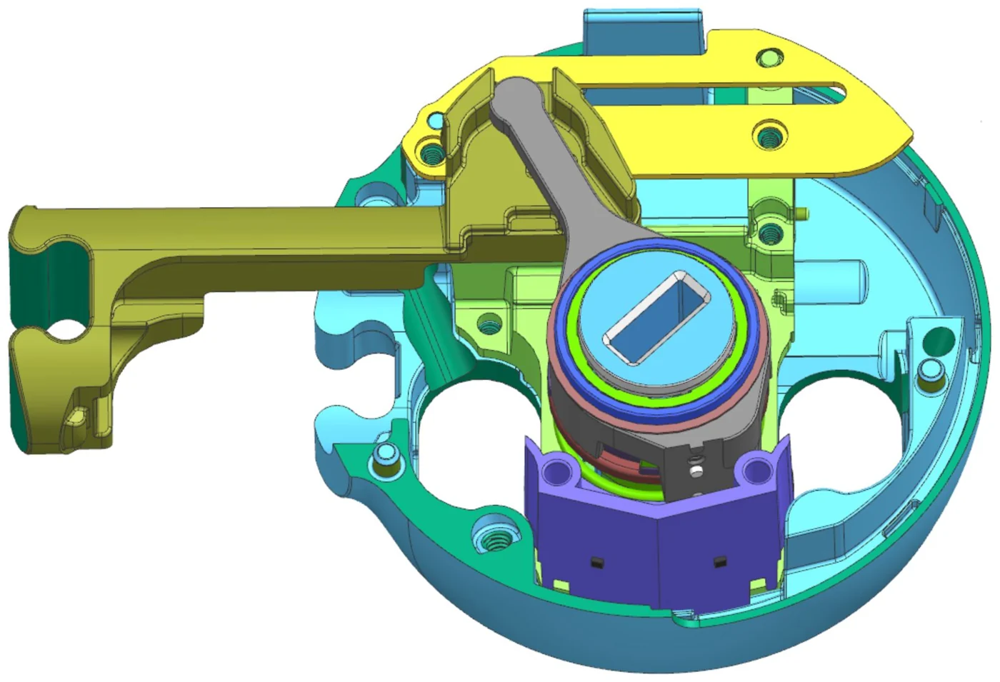

Work terms at Google · Level Home · Tesla (2×) · Geotab · Valbruna · Evercloak
Selected work
Two projects I can show in depth. Click one for the full write-up.
Currently buildingCHANGE design team · University of Waterloo · Fall 2026
Low-cost wheelchair pressure-relief system
Working with Spinal Cord Injury Ontario, our team is developing a low-cost system that helps wheelchair users with spinal cord injuries do and track pressure reliefs through the day. I’m leading the mechanical architecture: turning stakeholder feedback into requirements for comfort, thickness, durability, manufacturability and cost, then prototyping concepts against them.
My role
Mechanical lead · founding member
Now
Requirements and concept developmentWeek 3 of 12
Next
Functional prototype and bench testingFeedback from SCIO end users
Target
Pilot-ready design and BOMDecember 2026
Experience
✓ Cleared to share
Everything here is cleared to share. Some roles don’t allow photos or media of the work, so I describe those in text, and only to the extent written here.
Click “Details” on any role for more.
2026 · SummerGoogleProduct Design Engineering Intern, Pixel HardwarePixel Watch display glass, plus new test methods that saved $20K+ in prototypes and $15K in vendor testing.No photos or media
2026 · WinterLevel HomeProduct Design Engineering InternMagnetometer lock sensing ($12M projected), a 2M-cycle test fixture, a fix for bolt binding, and DFM on 20+ parts.Photos and media shown
2025 · FallTeslaMechanical Design Engineering Intern, Lighting, Switches & SensorsA new cabin light in CATIA V6 (Class A), my first PCB, and an RGBW LED controller for the design studio.Some photos and media shown
2025 · WinterTeslaMechanical Design Engineering Intern, Cell EquipmentA magnetic clamp holding 0.1 mm clearance (+15% yield) and a foil-stretching machine with closed-loop tension (−50% wrinkling).No photos or media
2024 · SummerGeotabSystem Verification InternA closed-loop dashcam test rack held at 26 °C, and 1st of 11 teams in the intern hackathon.Photos and media shown
2023 · FallValbruna ASWMechanical Engineering Co-opArc furnace CFD that found $900K in scrap losses, and a fan enclosure redesign saving $45K per unit.No photos or media
2023 · WinterEvercloakMechanical Engineering Co-opA prototype dehumidifier enclosure designed for manufacture, and +40% performance from membrane selection.Some photos and media shown
2026 · Summer · Mountain View, CA
Google
Product Design Engineering Intern, Pixel Hardware
Pixel Watch display glass
No photos or media
What I did
Owned the design and validation of the screen geometry for the Pixel Watch’s precision-molded display glass.
How I did it
Prototype testing, plus DFM work with the glass supplier, keeping the geometry inside the wall-thickness and draft constraints.
Results
Eliminated optical distortion in the glass, and proposed new glass geometries for a new Pixel Watch model.
Pixel Watch leak test
No photos or media
What I did
Developed a production-representative NMT test coupon and a fixture for leak testing it in-house.
How I did it
The coupon recreates the watch’s titanium-to-resin interface, so seal failures can be root-caused on the coupon without building complete watches. To test it, I ran a bubble test: the fixture and coupon are submerged in water and air is pushed through the fixture. Bubbles mean a leak.
Results
$15K saved in vendor testing by running the tests in-house. The vendor only makes the coupons I designed.
Drop test for FEA validation
No photos or media
What I did
Developed an installed-condition drop test for a preloaded, glass-filled plastic watch baffle.
How I did it
The fixture mimics the forces already on the baffle when it’s installed in a watch, so I could validate its dynamic FEA without a fully assembled watch.
Results
15 full watch assemblies no longer destroyed per test cycle, $20K+ saved in prototype costs.
Universal strain-test jig
No photos or media
What I did
Engineered a universal strain-test jig for resin dogbone specimens.
How I did it
An elliptical profile I derived mathematically, and tool-free clamping.
Results
2% strain testing standardised across 4 global suppliers, with no supplier-specific tooling.
I can’t show photos or media of this work, but everything written here is cleared to share.
2026 · Winter · Redwood City, CA
Level Home
Product Design Engineering Intern
Lock retraction sensing
Photos and media shown
What I did
The lock used two accelerometers on flex circuits (FPCAs) to tell where the bolt was. They were noisy, didn’t always catch the fully locked and fully retracted positions, reported in-between positions we had no use for, and were expensive. I proposed replacing them with integrated magnetometers and insert-molded magnets, which are simpler and more robust.
How I did it
I tested the idea on a modified lock: a magnet on the throw arm, read by two magnetometers with custom firmware, at fully retracted and fully thrown. The two positions read 973 : 1 apart in signal-to-noise. I then tested it again in the full assembly, with all the ferromagnetic parts in place, and the signal-to-noise was still high enough to make it obvious whether the bolt was retracted. That was the proof it would work.
Results
The proposal was approved and signed off, and the design was updated. BOM cost is down $12 per unit, for $12M in projected savings.
Capacitive-touch test fixture
Photos and media shown
What I did
Designed an automated solenoid test fixture for lifetime testing of the lock’s capacitive-touch keypad.
How I did it
The fixture holds solenoids that press the keypad inside the temperature chamber, so we could cycle it at different temperatures (10,000 cycles at each) and see whether the touch sensing failed over time. I worked with EE and firmware to configure the board and drive the solenoids.
Results
We found 14 issues across 2M+ validation cycles and fixed them with EE and firmware. One example: pressing a button several times very quickly dropped some of the presses. The keypad reached 100% functional success in EVT.
Tolerance analysis to fix bolt binding
Photos and media shown
What I did
In cycle testing, the bolt sometimes bound while extending and retracting, mostly when cycled fast or when the lock got knocked. It didn’t happen on every prototype, because part tolerances varied from build to build.
How I did it
I took every dimension that affects the bolt travel path and ran tolerance stack-ups on them, with datums defined to the travel path. Wherever a tolerance was too tight, I changed it in CAD, and we had the parts remade and retested.
Results
Actuation-force variability down 25%, so the mechanism is much more consistent. Cycle-test pass rate up 15%, to essentially 100% before production.
DFM and assembly
Photos and media shown
What I did
Led DFM on 20+ plastic injection-molded and die-cast parts, and on the die-cut adhesives.
How I did it
Supplier tooling reviews, moving parting lines and gates off cosmetic surfaces without changing the industrial design. For the die-cuts, I designed for assembly: pin-and-slot locating features placed where they’re easy to reach on the line. I wrote the assembly docs for the line, ran calls with the assemblers and moved slots when something was hard to reach. I also did test assemblies myself to find better spots for pins and slots, and helped on an assembly fixture.
Results
Cosmetic defects eliminated, tooling cost down 8%, and the die-cuts are easier to assemble.
Led the design of an interior cabin light for a new program.
How I did it
Solid and surface modelling in CATIA V6, with Class A surfaces designed for injection molding and for cost, ease of assembly and user experience.
2-layer PCB
Photos and media shown
What I did
Designed a 2-layer mixed-signal PCB from scratch in KiCad.
How I did it
Specified and selected every component, designed for low cost, DFM and fabrication, then hand-soldered and assembled the board myself.
RGBW LED controller
Photos and media shown
What I did
Proposed and built an RGBW LED controller for the design studio, replacing their off-the-shelf controllers.
How I did it
My own PCB, an SLA-printed enclosure and an ESP32.
Results
6× more LEDs per controller.
The PCB and LED controller are cleared to show because I proposed them and owned them end to end; they weren’t part of a program. The cabin light is program work, so no photos or media.
Designed a high-temperature magnetic clamping assembly for cell lamination.
How I did it
Tolerance stack-ups and a vibration-resistant design to hold 0.1 mm clearance.
Results
Yield up 15%, setup time cut from 30 to 5 seconds.
Foil-stretching machine
No photos or media
What I did
Led the mechanical, electrical and controls design of a modular foil-stretching machine.
How I did it
Load-cell-based tension control.
Results
Foil wrinkling and creasing failures down 50%.
Control box
No photos or media
What I did
Designed and built an electrical control box for closed-loop pneumatic control of the nip rollers.
How I did it
Arduino, load cell, amplifier and signal conditioner.
Results
Nip force held within ±2% of target under dynamic loading.
I can’t show photos or media of this work, but everything written here is cleared to share.
2024 · Summer · Oakville, ON
Geotab
System Verification Intern
Dashcam test rack
Not shown
What I did
Designed a closed-loop, air-cooled test rack for dashcam testing.
How I did it
3D-printed mounts and low-cost PC fans in a modular plastic enclosure.
Results
Holds the cameras at 26 °C.
Testing on historical data
Not shown
What I did
Moved AI dashcam testing onto historical feed data.
Results
32.4 tonnes of CO₂ cut a year.
Intern hackathon
Photos and media shown
What I did
Owned the code and video pipeline, and trained the in-cabin distracted-driving model.
How I did it
Two days learning to train computer vision models, five building one that worked, then polishing with my team. PII is blurred out of the video before the model sees it.
Results
The only fully working model in the competition, 1st of 11 teams.
Limitations
The output is noisy, with flickering boxes and some wrong labels. We had a week and not enough compute to train a better model.
2023 · Fall · Welland, ON
Valbruna ASW
Mechanical Engineering Co-op
Arc furnace CFD
No photos or media
What I did
Modelled scrap melting in an electric arc furnace.
How I did it
CFD in ANSYS Fluent, looking for thermal inefficiencies.
Results
$900K CAD in potential scrap losses found.
Reverse engineering
No photos or media
What I did
Reverse-engineered arc furnace parts.
How I did it
SolidWorks models, with GD&T capturing the original design intent.
Fan enclosure
No photos or media
What I did
Redesigned a 100,000 CFM fan enclosure.
How I did it
Brought it in line with the Ontario Building Code.
Results
$45K CAD saved per unit.
I can’t show photos or media of this work, but everything written here is cleared to share.
2023 · Winter · Kitchener, ON
Evercloak
Mechanical Engineering Co-op
Prototype enclosure
No photos or media
What I did
Designed a prototype dehumidifier enclosure.
How I did it
DFMA, plus CAD models and GD&T drawings so it would seal and could be manufactured off-site.
Membrane selection
No photos or media
What I did
Chose the membrane material.
How I did it
Designed custom tests for absorption, evaporation rate and elongation.
Results
Dehumidification performance up 40%.
Machined test fixture
Photos and media shown

Machined fixture for testing the membranes’ dehumidification performance at 100% humidity.
CNC machining a face, for fun
Photos and media shown
The CNC milling the face into wood.

The finished face. The hole is from an impurity in the wood block.
I can’t show photos or media of the enclosure or membrane work, but everything written here is cleared to share.
Earlier projects
From my first and second year.
Tools
CAD
NX, CATIA V6 (Class A), SolidWorks
Analysis
Ansys Mechanical and Fluent, tolerance stack-ups, GD&T, FMEA
Manufacturing
Injection molding, die-casting, CNC, SLA/SLS/FDM, lathe and mill
Lighting designers needed a firmware engineer every time they wanted to try a colour preset. I proposed a standalone controller so they don’t, and built it from scratch, including my first PCB.
Electronics
Custom 2-layer PCB, from schematic to hand assembly
Mechanical
Enclosure design, thermal analysis, material selection
Impact
6× LED capacity vs. off-the-shelf controller
01Requirements
Time
Done in 2 months, by December 2025
Electrical
Reliable for 10+ hours a day
Mechanical
Enclosed and sturdy enough to carry between Fremont and LA
User experience
Full LED control, no firmware help needed
02Three prototypes in seven weeks
P0 · proof of concept
Arduino, keypad, knob and LCD from parts on hand. One strip, one colour channel at a time.
P1 · functional prototype
ESP32, five sliders, programmable buttons and an OLED. Several strips at once.

Render
Pilot · custom PCB
My own 2-layer board in an SLA-printed enclosure. First build handed off to the design team for testing and feedback.
Before ordering P1 parts: simulation
While waiting for components, I built P1 in an online ESP32 simulator to check the pin mapping, the UI flow and multi-strip control. Debugging the software and wiring early cut bring-up time once the hardware arrived.

Simulation
ESP32, OLED, R/G/B/W and brightness sliders, strip-select buttons, four LED strips (shown as rings).

OLED dashboard
Selected strip, RGBW values (0–255) and brightness (0–100%).

P1 bring-up
On the bench.
P1 driving 3 LED strips.
03Choosing the microcontroller
Why switch
P0 ran out of pins and needed a cable for every firmware update. I scored three options; ESP32 won on wireless updates and room to grow.
Criterion (pass/fail)
Weight
ESP32
Pico W
STM32
Upgradable without a hardware redesign
3
✓ 3
✗ 0
✓ 3
Reliable for 40+ hours a week
3
✓ 3
✓ 3
✓ 3
Built-in wireless firmware updates (OTA)
3
✓ 3
✗ 0
✗ 0
Supports peripherals on different buses
2
✓ 2
✓ 2
✓ 2
Fast boot and recovery after a power cycle
1
✓ 1
✓ 1
✓ 1
Weighted total
12
6
9
How it’s scored
Each option either met what P1 needed or didn’t (✓ = weight, ✗ = 0). The Pico W can do over-the-air updates with a custom bootloader; the ESP32 has OTA built into its framework, which is what I scored.
04Schematic: Rev A, then Rev B
Why Rev B
Several Rev A parts couldn’t arrive in time, so Rev B swaps each one for an equivalent I could get within a day. The circuit works the same.
Button inputsMCP23017 chip, 16 buttonsSame chip on a module, 8 buttons
Sliders6 sliders4 sliders (R, G, B, W), all on ADC1
LED outputs8 channels6 channels, what the studio runs
Input protection1 A fuse + series diode15 A time-delay fuse
05Power and protection
12 V, 144 W adapter
→
15 A time-delay fuse
→
1000 µF bulk capacitor → GND
12 V → LED strips
LM2596 buck → 5 V → display, level shifters
ESP32 regulator → 3.3 V logic
Fuse current9 A / 0.75 = 12 A → 15 A
9 A max load is 60% of the selected 15 A fuse rating, below the 75% derating guideline. The 12 A adapter provides overload limiting, so the fuse serves as supplementary protection rather than the primary overload protection with this supply.
Fuse voltage12 V system → 32 VDC rated
Fuse voltage rating exceeds the maximum system voltage.
Fuse typeTime-delay
Selected to tolerate the expected startup inrush from the 1000 µF bulk capacitor without nuisance opening.
06PCB
Board
2-layer, mixed-signal, laid out in KiCad and reviewed with the EEs. I had it fabricated, then hand-soldered and assembled it.
Placement and routingGround pour on both layersThermal reliefs on the capacitor pads for hand soldering, with adjacent GND vias tying the ground pour between layers
TopBottom
07Does the buck converter need a heatsink?
No. Worst case, the IC reaches 83.9 °C, well under its 125 °C limit.
Output power5 V × 0.37 A = 1.85 W
Display 0.12 A + ESP32 0.25 A
Heat lost2.34 W − 1.85 W = 0.49 W
79% efficiency, from my own load sweep
Temperature rise0.49 W × 130 °C/W = 63.9 °C
Thermal resistance network, IC to air
IC temperature20 °C + 63.9 °C = 83.9 °C
Conservative: all heat from one IC, no radiation
08Enclosure
Exploded assembly
Features
A rib under the PCB stops it flexing when buttons are pressed.
Bosses and 1° draft ribs locate the board and set its height.
Slider walls and keycap slots keep the controls aligned.
Display bosses set the screen flush with the top.
Snap-fits allow tool-free opening during testing.
Snap-fit check31.85 MPa vs 41 MPa yield → FOS 1.29
0.5 mm deflection needs 13.45 N, in Formlabs Tough 1500
Top coverBottom coverSnap-fit hook
Now · prototypeSLA, Tough 1500, snap-fits
Easy to open, debug and change the fuse
Next · productionInjection-molded PC/ABS, screws
Tougher, secure, no snap-hook undercuts in the tool
09Firmware
Read buttons40 ms debounce
→
Read slidersmedian of 3, then smoothing
→
Changed enough?hysteresis, no flicker
→
Update stripsbrightness scales all channels
10Result
Designers now set colours and presets themselves. Each controller drives 6× more LEDs than the off-the-shelf units it replaced, and the team has an SOP to build more.
Level Home · Product Design Engineering · Winter 2026
Smart lock hardware: four projects
During my four months at Level Home, I designed a keypad lifetime-test fixture, proposed magnetometers to replace the accelerometers, resolved bolt binding through tolerance analysis, and improved molded-part manufacturability.
$12M
projected cost savings, magnetometer sensing
2M+
test cycles completed
25%
reduction in actuation-force variability
01Lifetime testing: capacitive-touch keypad

Keypad lifetime-test fixture, FDM-printed in PETGSolenoid mounting design
What it does
Automated lifetime testing of the capacitive-touch keypad. Solenoids press the keys while the fixture and lock sit in the temperature chamber: −22 °C to 66 °C, 10,000 cycles at each temperature.
Design
Each solenoid is held by its own mounting holes, so there’s no lid and the wires can’t catch in the solenoid springs. I worked with EE and firmware to configure the board and drive the solenoids. I FDM-printed the fixture in PETG, which stays rigid across the −22 °C to 66 °C test range.
Result14 issues found across 2M+ cycles
For example, pressing a key several times very quickly dropped some presses. All 14 were fixed with EE and firmware, and the keypad reached 100% functional success in EVT.
02Lock retraction sensing
Problem
Two accelerometers on flex circuits (FPCAs) detected whether the bolt was retracted. They were noisy, missed the fully locked and fully retracted positions, reported intermediate positions we didn’t need, and were expensive.
Proposal
Replace them with magnetometers and insert-molded magnets: simpler and more robust. I tested the idea before it went to review.
Mechanism, bolt retracted

Mechanism, bolt thrownTest setup: debugger, main board and magnetometer flex on the lock
Test
Mounted magnets on the part of the mechanism that moves with the bolt, at the base of the throw arm.
Mounted two magnetometers on a modified part of the lock.
With custom firmware, recorded the magnetic field (X, Y and Z) from both magnetometers with the bolt fully retracted and fully thrown, over repeated cycles.
Compared the difference between the two positions to the noise in the reading.
Bolt thrown4.32
Average magnetometer reading
Bolt retracted1.78
Average magnetometer reading
Noise0.0026
Variation in the reading at a fixed position
Signal-to-noise973 : 1
(4.32 − 1.78) ÷ noise
Why it works
The two positions differ by 2.54 while the noise is 0.0026, a 973 : 1 signal-to-noise ratio, so a thrown bolt can’t be read as retracted. I repeated the test in the full assembly with every ferromagnetic part installed, and the two positions stayed clearly separated.
The proposal was approved and signed off, and the design was updated. Replacing two accelerometers and their flex circuits with magnetometers and insert-molded magnets cut BOM cost by $12 per unit, about $12M in projected savings.
03Tolerance analysis to fix bolt binding
Problem
In cycle testing, the bolt sometimes bound while extending and retracting, mostly when cycled fast or when the lock was knocked. Only some prototypes did it, because part tolerances varied between builds.
What I did
Ran tolerance stack-ups on every dimension in the bolt travel path, with datums defined to the travel path. I opened up any tolerance that was too tight in CAD, and the parts were remade and retested.
A few of the stack-ups:
Actuation-force variability down 25%, so the mechanism is much more consistent. Cycle-test pass rate up 15%, to essentially 100% before production.
04DFM on molded parts
Molded and die-cast parts
I led DFM on 20+ plastic injection-molded and die-cast parts. In supplier tooling reviews, I moved parting lines and gates off cosmetic surfaces without changing the industrial design. Both parts below are cosmetic: the customer sees them when they open the box.
Cosmetic eyelet · before DFM→Cosmetic eyelet · after DFM
Cosmetic clip · before DFM→Cosmetic clip · after DFM
Die-cut adhesives
Designed for assembly: pin-and-slot locating features placed where they’re easy to reach on the line. I wrote the assembly docs, ran calls with the assemblers, and moved slots when something was hard to reach.
Tooling cost−8%
Across 20+ parts
Cosmetic defectsEliminated
Gates and parting lines off visible faces
05Lifetime testing: lock mechanism
A failure at 3.7M cycles
Lifetime testing
An example of the lifetime testing for locking and unlocking. 12 subassemblies were tracked and cycled over 2.5 months, past 5M cycles (a factor of safety of 8). Each failure was identified and logged.
06Technical drawings I made
I made many more drawings at Level; these are the ones I’m allowed to share.
Cosmetic injection-molded plastic part: owned the DFM and drawing.Adhesive die-cut: owned the DFA and drawing.Sintered magnet: owned the DFM and drawing.
Project notebook
Project Jarvis: distracted-driving detection system
Geotab’s Intern Innovation Challenge, Summer 2024, with two other interns. I’d never trained a model before, learned how that week, and ended up owning the code and video pipeline. We placed first of 11 teams.
1st / 11
Intern Innovation Challenge
72%
obstacle detection, 6% false positives
26 °C
held by my closed-loop test rack
32.4 t
CO₂ cut per year
Fig. 1 · Object detection from the front camera.
01 Learning computer vision in a week
Geotab’s 10th Intern Innovation Challenge asked teams to build a video telematics product using AI. I’m a mechanical engineer and had never trained a model.
So I spent two days learning how to train computer vision models, five days building one that worked, and the last three polishing it with my team.
I owned the code and the video pipeline. We built two models, one watching the driver and one doing object detection out the front. I trained the in-cabin one to tell attentive driving from distracted driving (adjusting the radio, drinking, talking), with PII blurred out of the video. My teammates built a driver score on top of it.
Ours was the only model in the competition that fully worked, and we placed 1st out of 11 teams.
Fig. 2 · The driver app, designed in Figma.Fig. 3 · The models running on real footage.Fig. 4 · How the pieces fit, with my part highlighted.Fig. 5 · First place.
02 My actual co-op work: a dashcam test rack
I designed a closed-loop, air-cooled test rack for the dashcams: 3D-printed mounts and cheap PC fans in a modular plastic enclosure. It holds the cameras at 26 °C.
I also moved AI dashcam testing onto historical feed data, which cuts 32.4 tonnes of CO₂ a year.
Project notebook
Pixel Watch at Google
Display glass and validation for the Pixel Watch: getting the glass geometry right, and finding ways to test that don’t destroy expensive prototypes.
$20K+
in prototypes saved by one drop test
$15K
vendor testing saved
15
prototypes no longer destroyed per test cycle
4
global suppliers on one strain jig
01 What I worked on
I owned the design and validation of the screen geometry for the precision-molded display glass. Between prototype testing and DFM with the supplier, I got rid of the optical distortion while staying inside the wall-thickness and draft limits.
For seal testing, I made a production-representative test coupon and fixture that recreates the titanium-to-resin interface, so seal failures can be root-caused without building complete watches. That saved $15K in vendor testing.
Validating the dynamic FEA of a preloaded, glass-filled plastic baffle meant destroying 15 low-volume prototypes per cycle. I developed an installed-condition drop test that validates it without that, which saved $20K+.
I also designed a strain-test jig for resin dogbone specimens. The profile is an ellipse I derived mathematically, and the clamps don’t need tools. All 4 global suppliers now run their 2% strain tests on the same jig.
Project notebook
Battery cell equipment at Tesla
Mechanical, electrical and controls design for equipment that handles battery foil.
0.1 mm
clearance held by the clamp
30 s → 5 s
clamp setup time
−50%
foil wrinkling and creasing
±2%
nip force under dynamic load
01 What I worked on
I designed a high-temperature magnetic clamping assembly for lamination. Tolerance stack-ups and a vibration-resistant design keep it at 0.1 mm clearance. Yield went up 15%, and setup went from 30 seconds to 5.
I led the mechanical, electrical and controls design of a modular foil-stretching machine with load-cell tension control. It halved wrinkling and creasing failures.
I also designed and built the control box (Arduino, load cell, amplifier, signal conditioner) for closed-loop pneumatic control of the nip rollers. It holds the nip force within ±2% of target under dynamic load.
Project notebook
A steel mill in Welland
My second co-op, in a mill that has been making specialty steel since 1918.
$900K
potential scrap losses found with CFD
$45K
saved per fan enclosure
100,000
CFM fan, brought to code
CFD
my first real simulation work
01 What I worked on
I modelled scrap melting in an electric arc furnace in ANSYS Fluent and found thermal inefficiencies worth $900K CAD in potential scrap losses.
I reverse-engineered arc furnace parts in SolidWorks, using GD&T to capture the original design intent.
I also redesigned a 100,000 CFM fan enclosure to meet the Ontario Building Code, which saves $45K CAD per unit.
Project notebook
My first co-op, at Evercloak
A Kitchener cleantech startup building membrane-based dehumidification. My first time designing something meant to be manufactured by someone else.
+40%
dehumidification performance
DFMA
first enclosure for off-site manufacturing
01 What I worked on
I designed a prototype dehumidifier enclosure using DFMA, with the CAD and GD&T drawings needed for it to seal and be manufactured off-site.
I also improved dehumidification performance by 40% by picking a better membrane material. I designed the tests for it myself: absorption, evaporation rate and elongation.
Project notebook
FrostBot and a wind-up toy
Two first-year design projects. I came back to FrostBot two years later and redesigned it with everything I’d learned on co-op.
98%
icing placement accuracy over 100 trials (target ≥80%)
100
verification trials
±2 mm
placement target
9/16″
pneumatic cylinder bore, V2
01 FrostBot V1 · ME101, Summer 2023
Fig. 1 · FrostBot V1 icing a dessert.
The problem
Automate the icing of circular desserts to improve consistency, throughput and precision.
Objectives
±2 mm icing placement accuracy
Desserts up to 15 cm in diameter
≥80% of icing inside the target circle (we measured 98%)
Constraints
EV3 controller and motors, LEGO gears, Tetrix structure
Must include 3D-printed and laser-cut parts
Under $150 CAD, excluding provided materials
Demo-ready in 12 weeks (June to August 2023)
C++, using only what ME101 taught
How it works
A motor and worm gear push a piston down through a 3D-printed hopper while a second motor spins the plate under the nozzle. The EV3 brick runs the sequence, with a gyro sensor for positioning and a touch sensor as the start button and emergency stop.
Fig. 2 · The finished robot.Fig. 3 · Icing hopper (CAD).Fig. 4 · Piston and nozzle.Fig. 5 · Worm drive and gears.Fig. 6 · Base and drivetrain.Fig. 7 · Early build.
Firmware
Written in C++ for the EV3. The gyro reading sets the motor speed to move the rack and pinion into position, the screen walks the user through choosing a radius and piston height, and the touch sensor starts or stops a run.
100 trials covering ease of use, frosting accuracy, food safety and different dessert sizes, plus software testing of the movement control and the radius and height prompts.
No.
Characteristic
Target
Method
How it was checked
1
Execution time
< 3 min
Test
Timed with a stopwatch
2
Emergency stop while frosting
—
Demonstration
Pressing the touch-button e-stop at any point exits the dispensing function
3
User satisfaction
≥ 8/10
Test
Users rated how visually appealing the iced dessert was
4
Accuracy
≥ 80%
Test
Frost within a given diameter; at most 20% of icing may land outside the perimeter
5
Desserts of varied size and mass
—
Demonstration
Structure stiff enough to ice cakes of different sizes and masses
6
Cost of production
< $150
Analysis
Sum of all receipts
7
Does not touch the dessert
—
Demonstration
Only the frosting contacts the dessert
8
Food safety
—
Analysis
No robot part touches food without a plastic barrier
What went wrong, and the fixes
Challenge
Solution
Icing consistency. A smooth, even layer was hard to get: the motors were limited and heated up in continuous use.
Cool Whip instead of store-bought icing. The lighter material cut motor load, stopped the overheating and sped up application.
Motor size and power. The small motors overheated, hurting performance and lifespan during frosting.
Gear ratio change. I designed and 3D-printed a smaller gear for more torque on the piston, reducing motor load.
02 FrostBot V2 · redesign, October 2025
V1 worked, but it flexed, it wasn’t precise, and its motor overheated on thicker icing. Two years and four co-ops later, I redesigned it as if it were going on a production line.
Mechanical goals
More rigid, more precise
Adjustable z-axis
No piston motor to overheat, so thicker icing works
Modular and scalable
Better materials where it touches food
Electrical and controls goals
EV3 replaced with an ESP32
More reliable motors
Closed-loop motor control
A better interface for customising designs
Fig. 11 · FrostBot V2.
What’s in it
Pneumatically actuated piston
Aluminium piston mount
Machined Delrin icing hopper
Motorised z-axis for dessert height
Electric linear slide for radius
80/20 aluminium frame
Vibration-resistant mounting feet
Not shown: ESP32 controller, pneumatic manifold, motor drivers and power supply, user interface, e-stop, and 80/20 brackets.
Fig. 12 · Piston and hopper.Fig. 13 · Linear slide and turntable.Fig. 14 · Front view.
What changed, and why
Item
V1
V2
Why
Frosting hopper
3D-printed PLA, fixed height
Machined Delrin, adjustable height
Machinable, strong and fatigue-resistant, easier to clean than printed PLA
Frame
Tetrix (a course constraint)
Aluminium extrusion
Modular, easy to mount attachments and route cables, can hold several FrostBot modules
Piston actuation
Electric motor and worm gear
Pneumatic, on an aluminium mount fixed to the hopper
No motor to overheat, so thicker icing works; a rigid mount keeps piston and hopper aligned
Z-axis
None
Piston assembly on an electric linear slide
Handles desserts of different heights and holds the best nozzle-to-surface distance for an even bead
Sizing the pneumatic piston
Goal
Approach
Outcome
Handle the stiffest icing (cold buttercream) with continuous, even flow that keeps up with the plate.
Make sure piston force, nozzle geometry and speed support the bead rate with no gaps or run-out.
Estimate worst-case yield stress and viscosity, then the pressure needed for the target flow.
Convert nozzle pressure to piston area at 90 psig shop air, with a 1.5× safety margin.
Match volumetric flow to the plate speed for a continuous bead.
9/16″ bore pneumatic cylinder.
It runs on standard 90 psi factory air, so it doesn’t need new infrastructure.
Find the icing flow rate the plate needs, from its diameter, rotation speed and an assumed bead diameter.
Find the nozzle pressure to extrude it, modelling icing as a Bingham plastic (it doesn’t flow until it passes a yield stress).
Find the plunger force from the hopper diameter, with a 1.5× factor of safety.
Find the cylinder bore for 90 psig factory air: 9/16″.
Fig. 15 · Why icing is a Bingham plastic.Fig. 16 · The cylinder type selected.
My hand calculations
Fig. 17 · Assumptions.Fig. 18 · Required flow rate.Fig. 19 · Pressure drop.Fig. 20 · Plunger force and bore.
03 Wind-up soccer toy · ME100, Fall 2022
A portable alternative to foosball for kids aged 6 to 12: a motor turns a cam, the cam drives a follower, and the follower swings an acrylic leg to kick the ball. Laser-cut wood, on a $50 budget per prototype.
The first prototype used a gearbox to drive the kick. The second moved to a TT motor and cam on a car base, which was simpler and kicked more reliably.
Fig. 21 · First prototype: a gearbox drives the kick.Fig. 22 · Second prototype, exploded.Fig. 23 · The finished toy.Fig. 24 · Exterior and interior, labelled.